コロナ禍に加え、ロシアによるウクライナ侵攻や大幅な円安、物価上昇、電力不足など、明るい話題が少なかった2022年。
常石グループはどのようにこの難局を乗り越えたのか。
各社社長にこの一年を振り返り、来年に向けた課題について語っていただいた。
合わせて、各社社長が思う、今年一年を表す漢字一文字も紹介する。
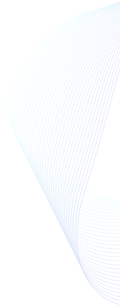
常石造船
今年の漢字
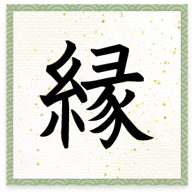
2022年の目標と進捗
2021年は受注隻数が大幅に伸びたが、2022年はその影響もあり、最低ラインの35隻程度の受注となった。それでも、2025年の前半までの工事量は確保できており、受注船価は想定以上となっている。
鋼材価格が高止まりし、コストが上昇したままという難しい状況のなか、グリーン変革（Gx）
やデジタル変革（Dx）といった新しい取り組みが形になっており、将来的な顧客生涯価値（LTV）の向上につなげていく。
なお、為替の歴史的な急変動（ドル高）により、損益は大幅に改善している。
2022年のTOPICS
2021年12月、THIが台風により甚大な被害を受け、復旧のため、現地スタッフに大きな苦労をかけることとなった。
また、神田ドック、三井E&S造船関連3社の子会社化や急激な為替の変動と円安ドル高に伴う損益改善も特筆すべき出来事だった。
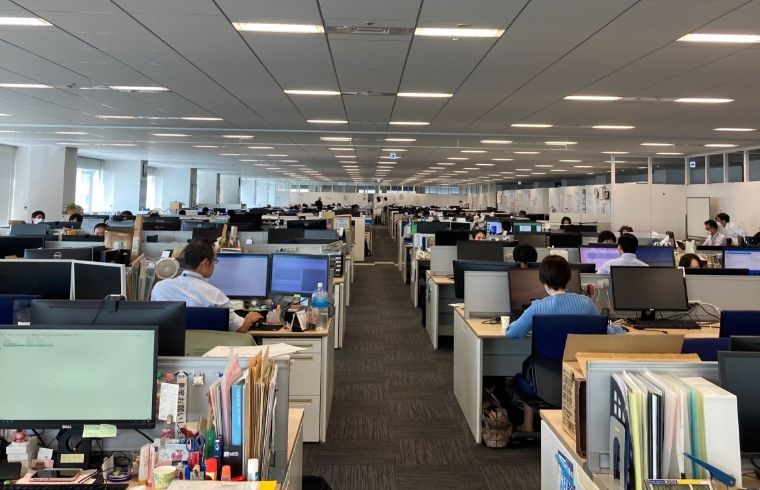
新たに子会社となった「三井E&S造船」の築地オフィス
2023年に向けて
グリーンとデジタルをさらに推進し、LTVを向上することで進化を継続する。そのために必要な人材育成にも注力していく。
TSUNEISHI HEAVY INDUSTRIES （CEBU）［THI］
今年の漢字
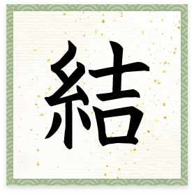
2021年12月16日の台風Odetteで被災した後、常石造船本社、常石グループ、顧客、取引先、地方自治体など多方面から多大な支援をいただいたことへの感謝と、THIの社員ならびに赴任者の結束力が高まったことへの思いを込めました
取締役社長 瀬戸 靖明
2022年の目標と進捗
“稼ぐ力”を養うため、ばら積み貨物船の造り込みに注力した。デジタル技術を活用して、遅れに早期対応することでスケジュールを守れたものの、生産性向上にはつながっておらず、継続課題となっている。
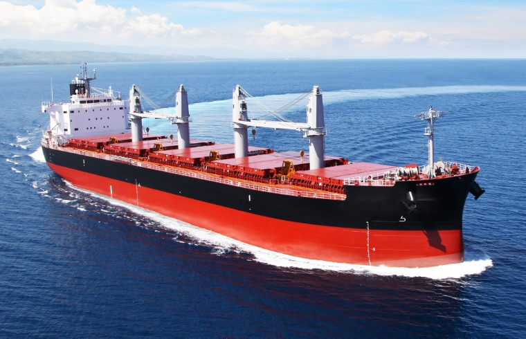
2022年に注力した「ばら積み貨物船」
2022年のTOPICS
本社の指導で導入したデジタル技術により、各接点の“見える化”を実現。検査工程に対する2%以上の遅れを警告としてメール配信し、週次の工程会議で対策を講じるというアクションサイクルができあがっている。
2023年に向けて
本社工場や中国工場のよいところを学び、取り入れ、シンプルな考え方と行動によって一歩一歩“稼ぐ力”を養っていく。
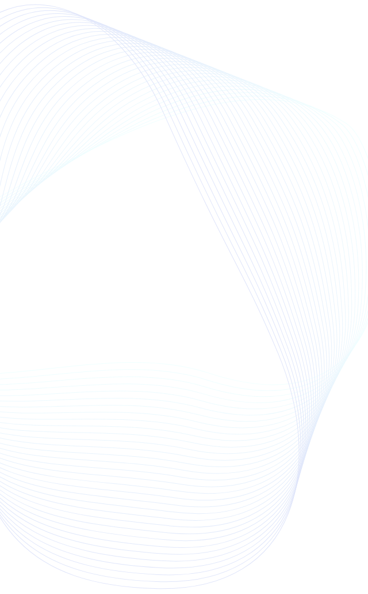
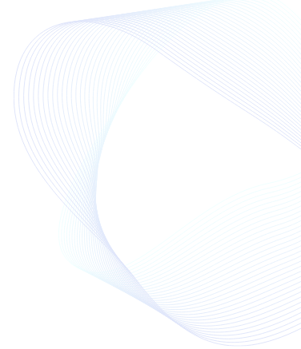
常石集団（舟山）造船［TZS］
今年の漢字
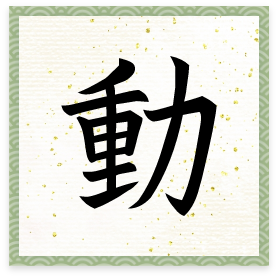
2020年1月から新型コロナウィルスの感染が全世界に広がり、2021年末までのおよそ2年にわたってさまざまな規制が敷かれたため、企業活動は例年と比較して厳しいといわざるを得ませんでした。そこで、2021年度末のMR報告総括において、2022年は各部門であらゆる活動を再開することを表明し、全部門管理職の認識を統一しました
総経理 佐藤 二郎
2022年の目標と進捗
年始に掲げた目標は「コスト削減」「建造能力拡大」「中国国内アライアンス」の3項目。
1つ目の「コスト削減」については、調達部門での新規サプライヤー開拓、工場部門でのメンテンナンス自社対応などによる間接費の削減を実践。損益改善目標90百万RMB（中国人民元）のところ146百万RMBの損益改善を達成している。
2つ目の「建造能力拡大」は、艤装期間の5日間短縮を実現し、現在は船台期間の3日間短縮に取り組んでいるところ。3つ目の「中国国内アライアンス」についても、YAMIC（江蘇揚子三井造船）との現業部門の交流、揚子江船業との全部門人材交流が実現するなど順調に展開している。
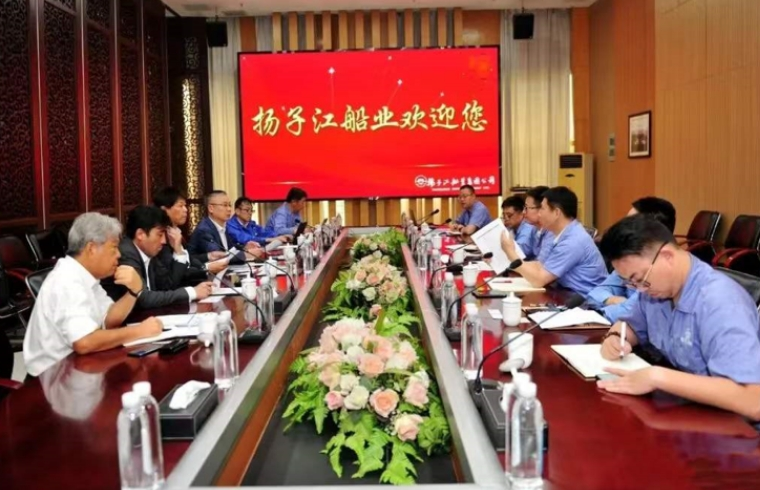
揚子江造船との会談の様子
2022年のTOPICS
黒字化に向けた損益改善の取り組みで、設定目標を上回る成果を上げた。
2023年に向けて
2023年度に創業20周年を迎えるにあたり、この先の20年、100年に向けて前進する節目となるように、2023年度単体決算の黒字化達成を目指す。そのために、これまで取り組んできた損益改善施策を発展させながら継続していく。
（次期総経理 村上佳史）
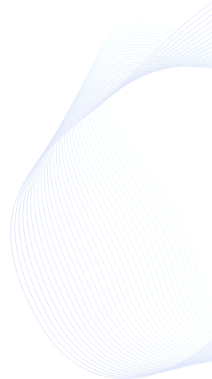
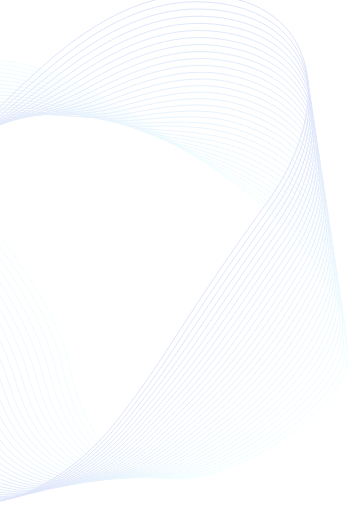
常石鉄工
今年の漢字
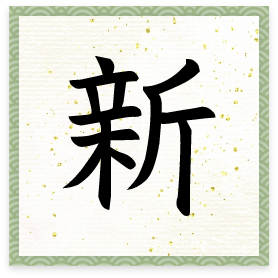
2022年は、常石鉄工初の試みとしてフローティングドックを建造しました。主事業は中間部材の製造ですが、メーカーとして一製品の製作に一貫して携わったことで、今後の事業展開に新たな可能性が生まれたと感じています
代表取締役社長 下村 直哉
2022年の目標と進捗
新型コロナウィルスの営業が継続するなか、積極的な営業展開により、グループ外受注環境は、舶用向け・陸上向けともに一昨年よりも上昇傾向にあった。その結果、売上額は目標を大きく超えることができた。
利益についても、収益性がより高い案件の選別受注、各種コストダウンへの取り組み強化により、当初の予想よりも大きく改善している。
2022年のTOPICS
2022年度は、当初目標である新規事業に積極的に参入した。
- ➀ エネルギー・環境プラント向け製缶加工品および特殊管製作
- ➁ 洋上風力・太陽光等再生可能エネルギー発電設備向けの鋼構造物製作
- ➂ 海外を含む各生産拠点の特徴・強みを生かした生産供給システムの再編とそれに伴うコスト競争力のUP
- ➃ 舶用次世代エネルギー船への追従
以上4つの項目すべてで成果を上げている。来年度以降もこの活動を拡大すべく、積極的営業活動および技術・生産設備の拡張を計画的に行っていく。
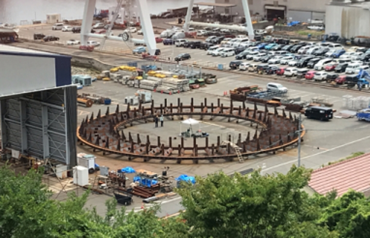
新規事業として取り組んだ神戸製鋼高炉向けトラフ台車
2023年に向けて
将来にわたって安定的な事業発展を遂げるため、中期経営方針である「グループ外売上（舶用・舶用以外）と収益の拡大」の実現が必須。
そのためには、経営ビジョン「期待の先へ、技術を携え躍進する」の言葉通り、まず「既存の枠にとらわれず変化を楽しむ」ことを企業風土としてしっかりと定着させ、社員一人ひとりが「より成長できる環境づくり」を実現する必要がある。
常に、既存技術の一歩先を行く事業に挑戦して社会に新たな価値を提供しつつ、人材の強化も行い、常石鉄工の企業価値を向上させていく。

常石商事
今年の漢字
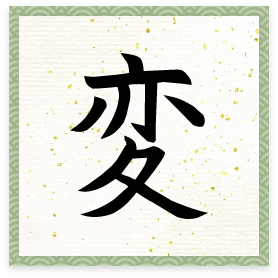
DX、グリーン関連など、世の中の事業環境の変化に伴って、常石商事としての商売の在り方も変化に対応する必要があるため、社員にも変革を求めます
代表取締役社長 野濱 健作
2022年の目標と進捗
社員一人ひとりの力が会社の浮沈に直結するため、社員の成長とモチベーションの向上はビジョン「常に期待される価値創造企業へ」の実現のための重要なカギとなっている。そのため、“社員の成長につながる学び”を継続する企業風土の定着が図られている。
週1回の定期的な報告会や若手社員を中心とした勉強会など、さまざまな学びを通じて社員一人ひとりの意識が前進していると感じられる場面も増えてきている。
そのなかで、若手社員を中心に、10年後の自分の姿を見据えて学び考え続ける時間と、現状に流されるだけの時間との間には大きな差が生じるということを伝え、刺激し続けている。実際の商談で成功体験を実感する社員も出てきているため、継続して取り組んでいく。
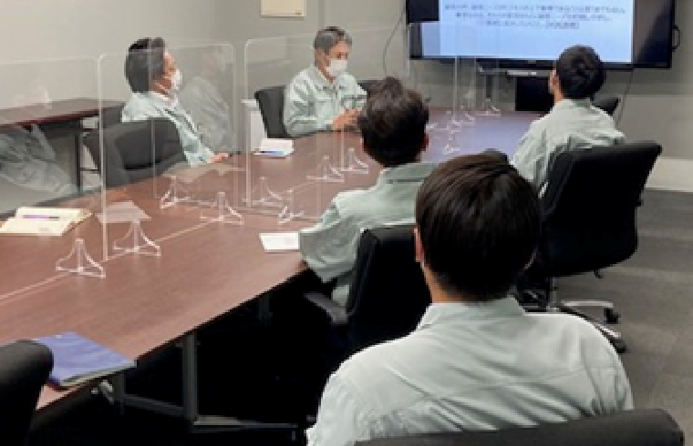
若手社員を中心とした勉強会
2022年のTOPICS
常石鉄工、常石エンジニアリングと協業し、常石造船の協力を得て、グループ外向けのフローティングドックを製作した。グループ各社との協業による大きな案件は少ないため、情報共有を密に行い対応を続けた結果、今まで以上の協力関係を築けた。
2023年に向けて
社員の能力が唯一の財産。今後の成長を見据えるうえで、社員一人ひとりの商売に直結する能力や意識の向上が不可欠であるため、学び続ける文化を定着させ、身に付いた知識や能力を実践で生かしながら、顧客に頼られる存在へと成長を目指す。
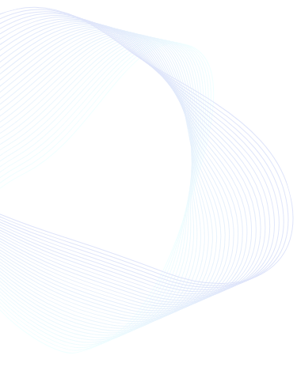
ツネイシクラフト＆ファシリティーズ
今年の漢字
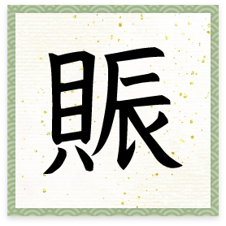
2022年はさまざまなところで“賑わい”に参加しました。コロナ禍で日本中が萎縮した2020年および2021年からの“賑わい復興”を少しずつ歩んでいくなかで、どのイベントも大盛況で、人間は人と直接触れ合うことが必要なんだと強く感じました
代表取締役社長 神原 潤
2022年の目標と進捗
事業内容、売上については年初の目標をクリアすることができた一方で、利益については達成に至っていない。調達コストの上昇が想定以上に進んでいること、作業量の平準化が思うように進まなかったことが要因と考えられる。
人員計画については大きな変動はなかったが、出向受け入れ者のなかに期間途中でギブアップするケースがあり、慣れない環境での業務についてどのようにフォローするかが今後の課題となった。
全体としては計画通りに進んでおり、来期はさらなる飛躍が期待される。
2022年のTOPICS
「ハイドロびんご」がシップオブザイヤー2021の部門賞を獲得。世界初の「水素で動く旅客船」としての認知が広がった。
10月には小池 百合子東京都知事が乗船。「ハイドロびんご」の完成度の高さを実感してもらった。12月にはベルギー王国のアストリッド・ド・ベルジック王妃も乗船した。
また、さまざまなイベントに参加し、多くの来場者にエネルギーについて考えるきっかけを提供できた。
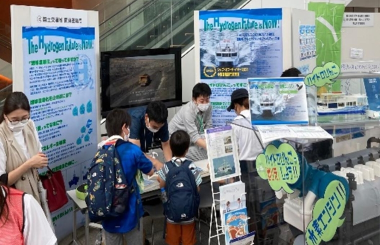
ジャパンハイドロとともに出展した「横浜うみ博2022」
2023年に向けて
これまでに培ってきた技術を結集し、新たな船種に挑戦する年にすべく取り組みを進める。
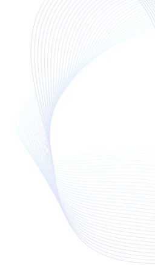
常石エンジニアリング
今年の漢字
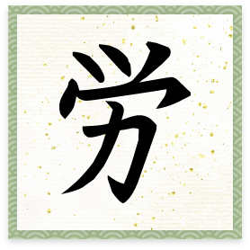
2022年はいろいろな困難が発生し、その対応に苦労しました。また、目標達成に向けた取り組みにも苦労しましたが、周囲からの協力もあり対応することができました。一生懸命に“はたらいた”社員を“労（いたわり）”“労（ねぎらい）”たいと思います
代表取締役社長 平野 功造
2022年の目標と進捗
財務面では売上、利益ともに目標値を達成できる見込み。また、今年度の課題として挙げていたTTSPの積極的な活用については、時数計画値をギリギリではあるがクリアしている。
2022年はS1614タグボート、フローティングドックが主な案件であったが、設計本部や工場などの協力を得て対応が完了している。
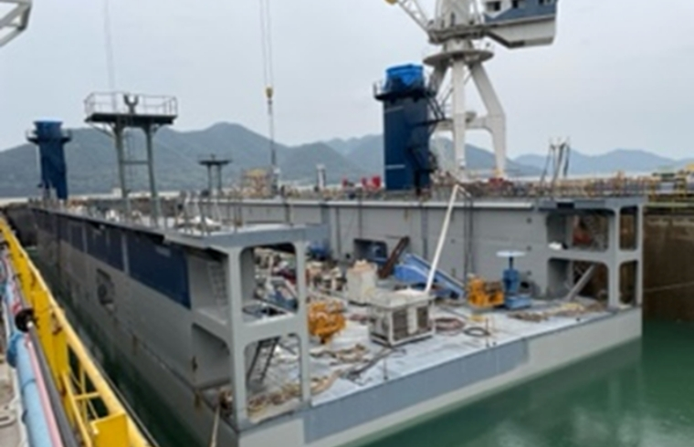
常石商事、常石鉄工と協業して建造した「フローティングドック」
2022年のTOPICS
特に船殻設計グループについて、組織強化、人員増員ができた。
2023年に向けて
収益力を高めて経営基盤の安定を目指す。そのために、品質と設計対応力の向上に努め、エンジニアリング会社としての顧客からの信頼をより高めていく。
（次期代表取締役社長 柴田憲一）
TSUNEISHI TECHNICAL SERVICES（PHILS.）［TTSP］
今年の漢字

コロナ禍における世の中の変化や、規制下でのつらい経験を通じて、さらなる成長の機会、そして、社員と会社がより強くなるために何が必要かを学ぶ機会の多い一年でした
取締役社長
Segismundo F.Exaltacion Jr.
2022年の目標と進捗
設計品質と期限内出図について、今年度の目標は予定通り達成した。
各部署を複数ユニットから成るチームに再編成し、各ユニットにおいて1隻の設計作業を完結させる形をとり、各船に対する責任と権限を持たせることで、チームワークとオーナーシップを醸成し、設計品質と期限内出図の改善につなげた。
また、DXに必要なスキル、設計マルチスキル取得など、リスキリング、アップスキリングの活動も開始している。
2022年のTOPICS
各部署を複数ユニットから成るチーム編成としたことで、個人プレーではなくチームプレーにより設計品質が大きく向上しており、2020年比85％以上のエラー削減を実現した。
また、ユニット制は、スキルアップはもちろん、より広範囲の図面の作図経験につながっているほか、プロジェクトマネージメントおよびピープルマネジメントの機会の創出、ユニット内に手本となる人材が生まれることによるメンバーへの好影響、成果と優劣の見える化といった恩恵ももたらしている。
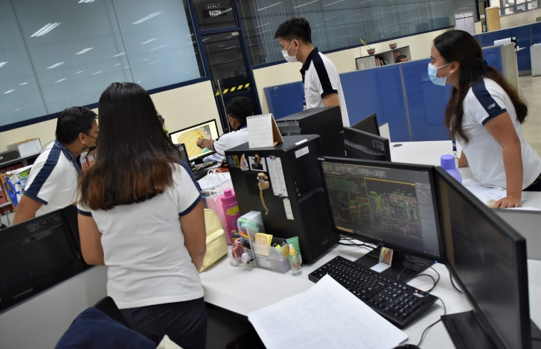
各ユニットごとに責任を持って1隻の設計を担当
2023年に向けて
世の中の情勢を考えると挑戦すべきことは多々あるが、2023年は熱意と希望を持ち続ける年と位置付けている。また、設計および各種サービスのクオリティを高め、顧客・地域社会からの信頼を得るため、組織力を高めていく。そうすることで、SDGsに含まれている5P（People／Planet／Prosperity／Peace／Partnership）の推進につなげていく。
4月に神田ドック、10月に三井E&S造船、新潟造船、由良ドックが仲間になりました。こうした子会社化が、Gx（グリーン変革）やDx（デジタル変革）を推進しLTV（顧客生涯価値）を向上させる取り組みにつながると期待できる一年となりました。さまざまな縁を感じた幸運な一年でした
代表取締役社長 奥村 幸生